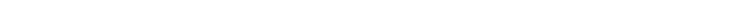

Las ideas
Alphabets
Alphabets es una pantalla mecánica modular para mostrar mensajes interactivos. Es un proyecto que empecé en 2014 y he abandonado y retomado en múltiples ocasiones.

Night
Day & Night son los nombres de dos¿Por qué dos? Otra de tantas promesas incumplidas que hago.
telescopios reflectores Dobson Newtonianos automatizados para seguir cuerpos celestes, capturar y apilar imágenes. Son idénticos, excepto que uno es blanco y el otro negro. Luz y oscuridad, día y noche.

Solo
Solo es el nombre de un accesorio para cámaras SLR que facilita la grabación de video personal al automatizar el enfoque y algunos movimientos de cámara.

Mirai 未来
Mirai es un microordenador portátil de estética retro cyberdeck que incorpora un teclado mecánico. Aspira a revivir la nostalgia de los dispositivos analógicos y el diseño de los años 80 mediante la fabricación digital.

Scylla Σκύλλα
Scylla esScylla era una criatura de la mitología griega que atormentaba a los buques en el estrecho de Messina.
una hidroala con turbina diseñada para actividades recreativas en mares o lagos.

Nest
Nest no es una vivienda, pero se puede vivir en ella. Es un módulo de soporte vital para uso temporal, portable y dirigido al mercado de una sola persona. Ocasionalmente dos ;-)

La decisión
Cuadro comparativo
| Nest | Mirai | Scylla | Alphabets | Solo | Night | |
|---|---|---|---|---|---|---|
| Semanas^\dagger | 16 | 4 | 8 | 4 | 2 | 6 |
| Dificultad | 4/5^\dagger^\dagger | 2/5 | 4/5 | 2/5 | 2/5 | 3/5 |
| Versatilidad | 5/5 | 1/5 | 1/5 | 4/5 | 2/5 | 2/5 |
| Coste | 1k | 0.5k | 1k | 0.1k | 0.1k | 0.5k |
| Portabilidad | Baja | Alta | Media | Alta | Alta | Media |
^\dagger^\dagger Podría llegar a 5/5 por las instalaciones sanitarias
Ikigai

El veredicto
Se supone que ahora tengo que decidirme por uno. Pero no lo haré. En lugar de eso, avanzaré con todos los proyectos que tengo en marcha. Para manejarlos simultáneamente me moveré en espirales pequeñas. Algunos se quedarán en el camino y sólo uno se consolidará como proyecto final.